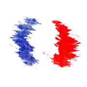

O nas
W 1995 roku za sprawą Ameli Łubockiej powstał Salon Kosmetyka. Umiejętności i pasja właścicielki sprawiły, iż w krótkim czasie zyskał on duże grono zadowolonych Klientów. Wychodząc naprzeciw ich oczekiwaniom w 2005 roku przy ulicy Ozimskiej 7 powstało Studio Metamorfoza. Od tej pory nawet najbardziej wymagający Klienci mają możliwość skorzystania z usług wykwalifikowanej kadry salonu kosmetycznego Ameli Łubockiej ( kosmetologa) oraz salonu fryzjerskiego sieci L'oreal z certyfikatem Salonu Expert.
1 września Denis Le Huu Nho przejął część fryzjerską aby razem z Amelią Łubocką stworzyć miły zakątek dla naszych klientów.

A tutaj parę osobistych słów ....
Witam wszystkich,
Nazywam się Denis, urodziłem się i mieszkam we Francji. Jestem kompozytorem i obecnie poza wieloma innymi aktywnościami, w moim małym paryskim studio pracuje nad projektem "Behind the Shapes", gdzie muzyka techno sprytnie łączy geometryczne kształty malowane akwarelą.
Postanowiłem przejąc salon STUDIO Metamorfoza aby nadać mu nowy kierunek, nowe życie i nowy oddech. "Zastanawiacie się z pewnością jaki jest związek między muzyką, a salonem fryzjerskim?” W obu przypadkach to sztuka. Połaczenie ich może dać coś wyjątkowego. Innymi słowy nowej wizja, w której pielęgnacja włosów wykonana rękoma naszych specjalistów, skąpie się w autentycznej i artystycznej atmosferze. Chce wydobyć potencjał Salonu Metamorfoza, który ujrzałem w pierwszym momencie otwarcia jego drzwi. Mam wizję stworzenia wyjątkowego miejsca inspirowanego smakiem i elegancją Francji moich dziadków i młodości moich rodziców. Chcę żebyście poczuli tutaj atmosferę, która odczuwalna jest na brukowanych uliczkach Montmartre, Paryża który kochamy. Atmosfera, która stawia na kreatywność i profesjonalizm naszych fryzjerów którzy ze swoim zapałem i profesjonalizmem są do Państwa dyspozycji. Chcę zapewnić Państwu przyjemne chwile i powiew świeżego powietrza w Waszej codzienności.
Nasz cel? - Uśmiech każdego klienta.

Bonjour à ous,
Je m'appelle Denis, français d'origine vietnamienne, je suis compositeur dans mon petit studio parisien pour le projet créatif "Behind the Shapes", où la musique techno se mêle habilement aux formes géométriques peintes à l’aquarelle.J'ai décidé de reprendre la teneur du salon Studio Metamorfoza afin de lui donner une nouvelle vie et un nouveau souffle. “Mais quelle est le lien qui pourrait accrocher un musicien à un salon de coiffure?” me direz-vous. Tout simplement dans l’objectif d’une vision nouvelle, où les soins capillaires que vous recevrez par les mains de nos professionnels. seront baignés d’une atmosphère authentique et artistique. Pour ce salon Studio Metamorfoza, je cherche à faire exprimer le potentiel que j’ai vu en lui lorsque j’ai ouvert sa porte la première fois. Je souhaite dégager une atmosphère qui s’inspirera de la France de mes grands-parents et de la jeunesse de mes parents. Une atmosphère que l’on peut ressentir lorsque l’on arpente les rues pavées de Montmartre, le Paris que l’on aime. Une atmosphère qui mettra la créativité et le professionnalisme de nos coiffeuses à votre service afin de vous offrir une expérience agréable et une bouffée d'oxygène dans votre quotidien.Ce que nous voulons, simplement vous voir sourire à la vie bien plus encore.